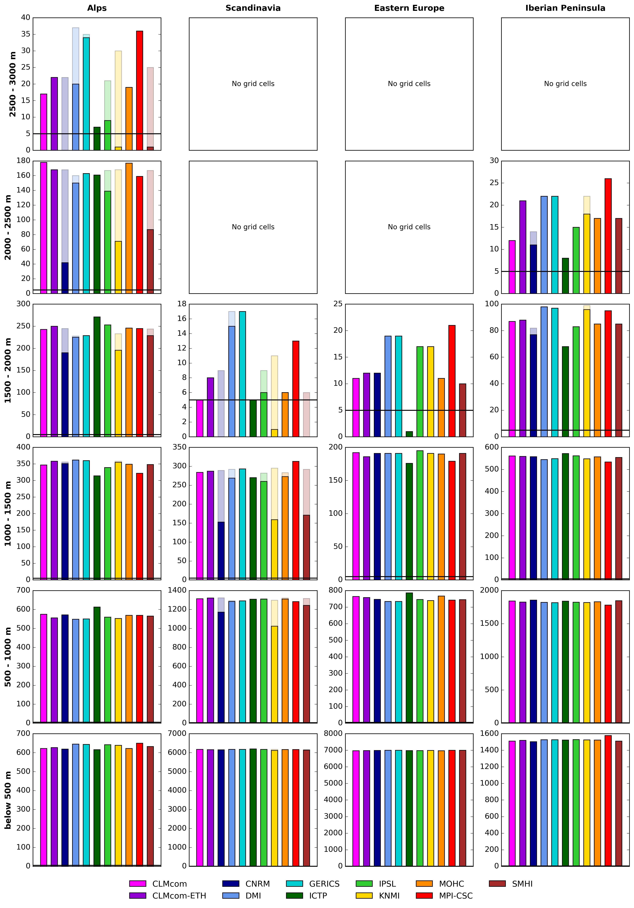

Data
Input Data
The EURO-CORDEX Regional climate model (RCM) output is used for the period 1971–2100 for the following variables:
- precipitation
- near-surface air temperature
- snow water equivalent (SWE)
- snow depth (SD)
All datasets are publicly accessible via the Copernicus Climate Data Store (CDS):
- https://cds.climate.copernicus.eu/datasets/projections-cordex-domains-single-levels?tab=download
Model selection and exclusions
Several simulations were excluded to ensure a homogeneous ensemble:
- Simulations from SMHI and CLMcom driven by CNRM were excluded, because the historical period is forced by a different GCM realisation than the scenario simulations.
- The WRF361 model was omitted because SWE was not provided and no corresponding reanalysis-driven simulation is available.
Note: the ensemble size and the combination of RCMs and GCMs can differ between scenarios.
Workflow
Time definitions
| Time Slice | Period |
|---|---|
| Historical | 1971–2000 |
| Near future | 2021–2050 |
| Far future | 2070–2099 |
In Europe, SWE exhibits a pronounced seasonal cycle with a maximum during Northern Hemisphere winter. Analyses are therefore focused on the winter season.
- Hydrological year: year n is defined as September (year n) to August (year n+1).
- Winter half-year: defined as November (year n) to April (year n+1).
For example:
- 1971–2000 winter means use winters from Nov 1971 to Apr 2001.
- 2021–2050 spans winters from Nov 2021 to Apr 2051.
- 2069–2098 spans winters from Nov 2069 to Apr 2099.
Scenario simulations were terminated in April 2099 to ensure consistency with HadGEM-driven GCM simulations that are only available until the end of 2099.
Homogenisation steps
Several steps are applied to obtain a homogeneous ensemble.
Substitute missing SWE
Not all RCMs provide SWE. In simulations without SWE, SWE is estimated from snow depth (SD) assuming a constant snow density of 312 \(\mathrm{kg\,m^{-3}}\) (Sturm et al., 2010):
This method is evaluated in detail in Steger (2026).
Snow accumulation artifacts
Some RCM grid cells exhibit unrealistically persistent snow accumulation due to model deficiencies and missing glacier representation. To exclude these artifacts, grid cells were masked if they showed:
- a minimum annual SWE exceeding 10 mm for more than five consecutive years, and/or
- artificially capped or prescribed snow values.
All subsequent snow analyses are restricted to the remaining grid cells (details in Steger, 2026).
Area means are only computed if at least 5 grid boxes remain after masking. In some cases this leads to exclusion of a particular RCM simulation for the highest elevation bands.

Fixed fields
- A common land–sea mask is applied across the entire RCM ensemble. Land grid points are defined where at least 50% of the surface is classified as land in all RCMs.
- Because orography differs between RCMs (Steger, 2026), elevation classes are defined separately for each model using its native orography and 500 m intervals.
Remapping
Area means are computed on the native grids of the individual simulations. For horizontal (map-based) analyses, all simulations are brought onto a common grid.
- The simulations ALADIN63 and RegCM4-6 are remapped to the standard EURO-CORDEX 0.11° grid using conservative remapping (
remapcon) in CDO. - MPI-CSC-REMO2009 is provided on a shifted EURO-CORDEX grid and is re-aligned to the standard EURO-CORDEX 0.11° grid using
cdo setgrid.
References
- Christian Steger (2026)
- Sturm, M. et al. (2010): Snow density reference.
- Schulzweida, U. (2019): Climate Data Operators (CDO), Zenodo. https://doi.org/10.5281/zenodo.3539275